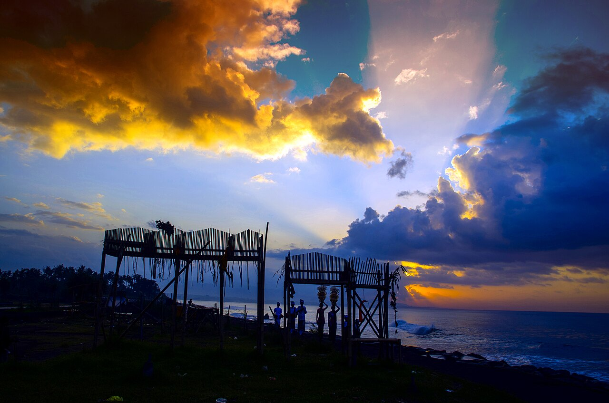

Keramas
Bali, Indonésie · surf, bodyboard

Droite courte et très creuse sur la côte est de Bali, réputée pour ses sections de manœuvres. Elle marche le matin, quand le vent de terre lisse la houle.
- Lieu
- Bali, Indonésie
- Niveau
- Expert
- Activités
- surf, bodyboard
- Type d'eau
- Mer / océan
- Coordonnées
- -8.59, 115.35 (position approximative du secteur)
Dangers à connaître
- Fond de récif proche de la surface.
- Vague qui ferme brutalement sur la fin.
- Pic étroit et très disputé.
Le conseil d'Ocean Buddy
Session à l’aube : après 9 h le vent tourne et la vague se hache.
Ouvrir dans Ocean Buddy Télécharger sur l'App Store
Source : Description historique Ocean Buddy · vérification externe en attente.